NIT Rourkela received 1,340 offers in 2025–26 Placement Drive
Placements
A record placement season: 1,340 offers from top recruiters across core engineering, IT, consulting and analytics.

राष्ट्रीय प्रौद्योगिकी संस्थान राउरकेला
ଜାତୀୟ ପ୍ରଯୁକ୍ତି ପ୍ରତିଷ୍ଠାନ ରାଉରକେଲା
An Institute of National Importance


1 / 6Welcome to NIT RourkelaCampus film
NIT Rourkela is one of the premier national level institutions for technical education in the country and is funded by the Government of India. The Government of India has elevated the Regional Engineering College, Rourkela to a university under the name of National Institute of Technology, Rourkela.
The main objective of the Institute is to produce quality Engineers and Scientists in Graduate and Post-Graduate levels in various branches of Engineering and Science. The Institute is managed by the Board of Governors of National Institute of Technology (Rourkela) Society...
Learn MoreTo become an internationally acclaimed institution of higher learning that will serve as a source of knowledge and expertise for the society and be a preferred destination for undergraduate and graduate studies.
To advance and spread knowledge in the area of science and technology leading to creation of wealth and welfare of humanity.
It is a privilege for me to have assumed the position of Director, NIT Rourkela, on 18th February 2022. NIT Rourkela has a rich legacy of sixty dedicated years of service to the nation and is the pride of Odisha.
Excellence in teaching and high-quality research are the pillars on which the Institute is built. The Institute aims to foster 21st-century skills and competencies supported by defined learning frameworks and industrial internships for the students as part of Industry 4.0. With these skillsets, our students are future-ready to make an impact at work in general and society in particular.
Prof. K. Umamaheshwar Rao
Director, National Institute of Technology Rourkela
Read the full message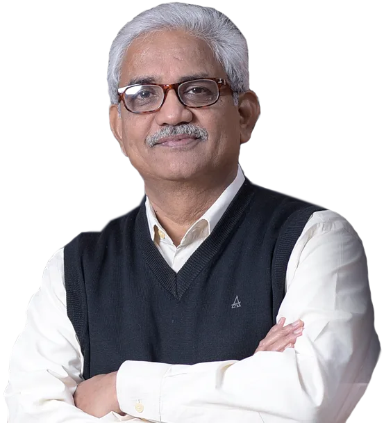
1340
Total offers
Annual Placement Report 2025-26. Record-breaking offers this year.
470
Companies visited
₹1.31 Cr
Highest CTC
| Branch | LPA |
|---|
| Sector | LPA |
|---|
| Programme | LPA |
|---|
| Type | Share | Highest |
|---|
| Sector | Share |
|---|
Each marker shows the rank on a 1 to 50 scale; further left is better.
International Bio Engineering Conference (IBEC-2026)
Conference, 10 Dec 2026 to 12 Dec 2026
13th International and 53rd National Conference on Fluid Mechanics & Fluid Power (FMFP2026)
Conference, 10 Dec 2026 to 12 Dec 2026
Electrochemical Impedance Spectroscopy: Theory and Practice
Workshop, 07 Dec 2026 to 11 Dec 2026
ELECTROCHEMICAL IMPEDANCE SPECTROSCOPY: Theory and Practice
Workshop, 07 Dec 2026 to 11 Dec 2026
2026 2nd IEEE International Conference on Smart Power Control & Renewable Energy (ICSPCRE-2026)
Conference, 04 Dec 2026 to 06 Dec 2026
International Conference on Processing & Characterization of Materials (ICPCM 2026)
Conference, 03 Dec 2026 to 05 Dec 2026
Drone Surveying & Mapping for Mining Professionals-II
Continuing Education, 23 Nov 2026 to 27 Nov 2026
Short Term Course ABHEDYA 2026 (Applied Basics of Hardware Engineering, Design, Security & Assurance)
Continuing Education, 23 Nov 2026 to 27 Nov 2026
34th National Conference Condensed Matter Days-2026 (CMDAYS-2026)
Conference, 17 Nov 2026 to 19 Nov 2026
Departmental Seminar
Departmental Seminar
Departmental Seminar
Registration Seminar
Synopsis Seminar
Progress Seminar
Registration Seminar
Registration Seminar
Progress Seminar
Placements
A record placement season: 1,340 offers from top recruiters across core engineering, IT, consulting and analytics.
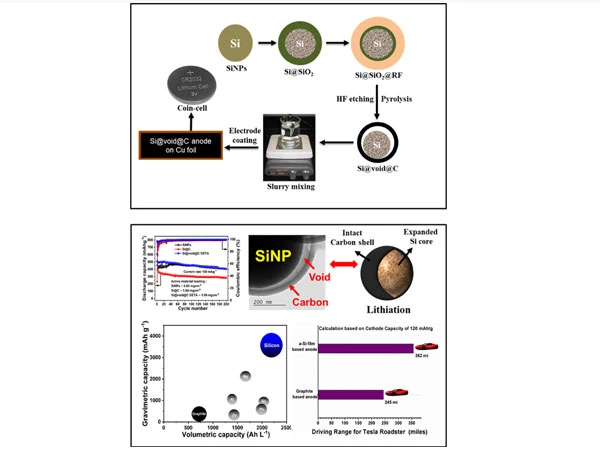
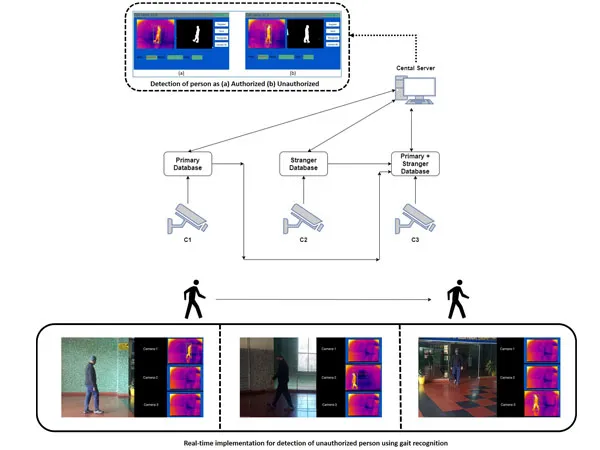
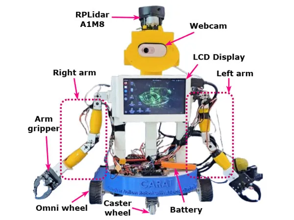
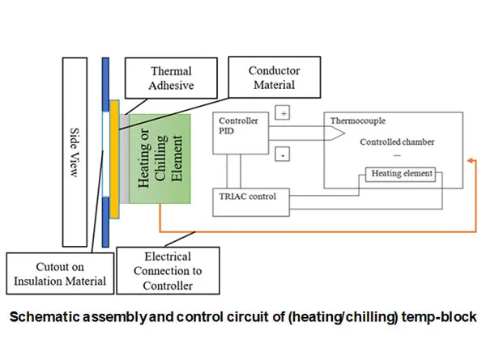
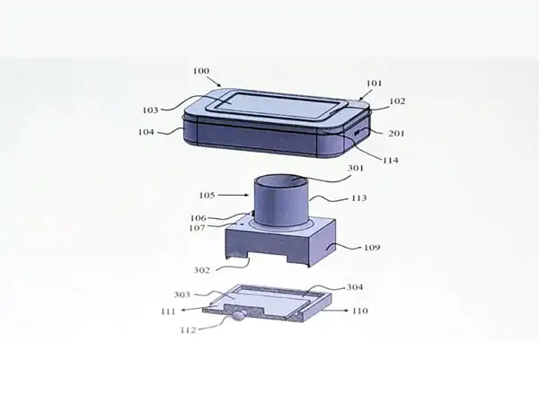
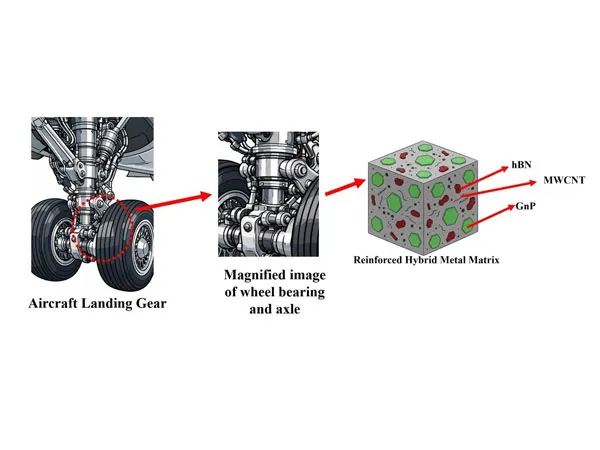
NIT Rourkela Develops High-Durability Material for Aircraft Landing GearKnow More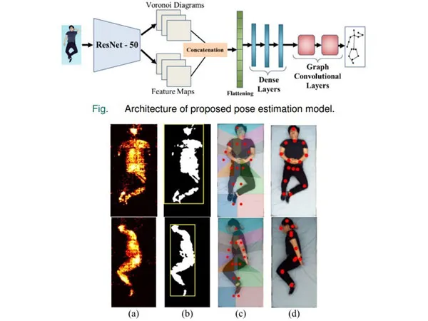
NIT Rourkela Develops Multi-Sensor AI System for Accurate Patient Sleep Posture DetectionKnow More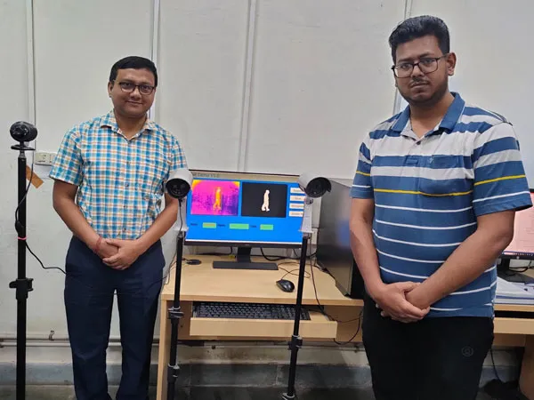
NIT Rourkela Patents Advanced System to Detect Intruders in Restricted ZonesKnow More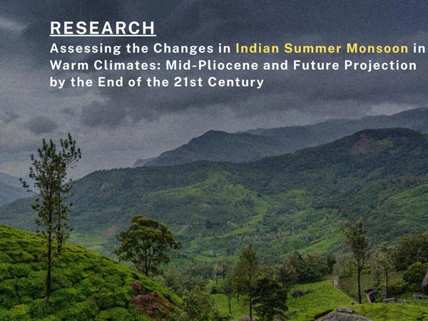
NIT Rourkela Research Explores the Altering Effects of Global Warming on the Indian Summer Monsoon!Know More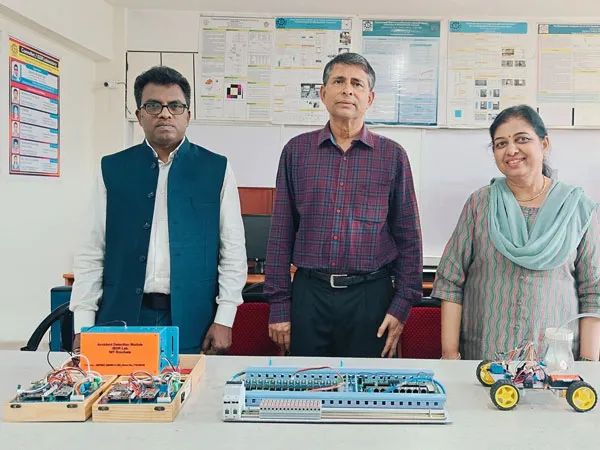
NIT Rourkela Proposes Smart Roadside System to Detect Vehicles at Blind CornersKnow More20124
Publications
309522
Citations
HealthTech • AI Diagnostics
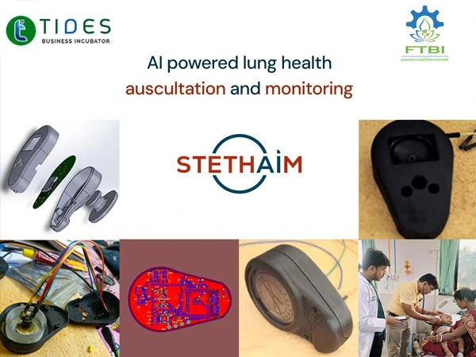
Respiratory diseases such as COPD, pneumonia, and asthma remain major health concerns. Stethaim is an AI-powered smart auscultation device that captures lung sounds, detects wheezes and crackles, measures respiratory rate, and provides structured clinical insights for early diagnosis.
Clinical-grade acoustics developed and incubated at FTBI • TIIR NIT Rourkela.
Explore StartupEnterprise AI • EdTech
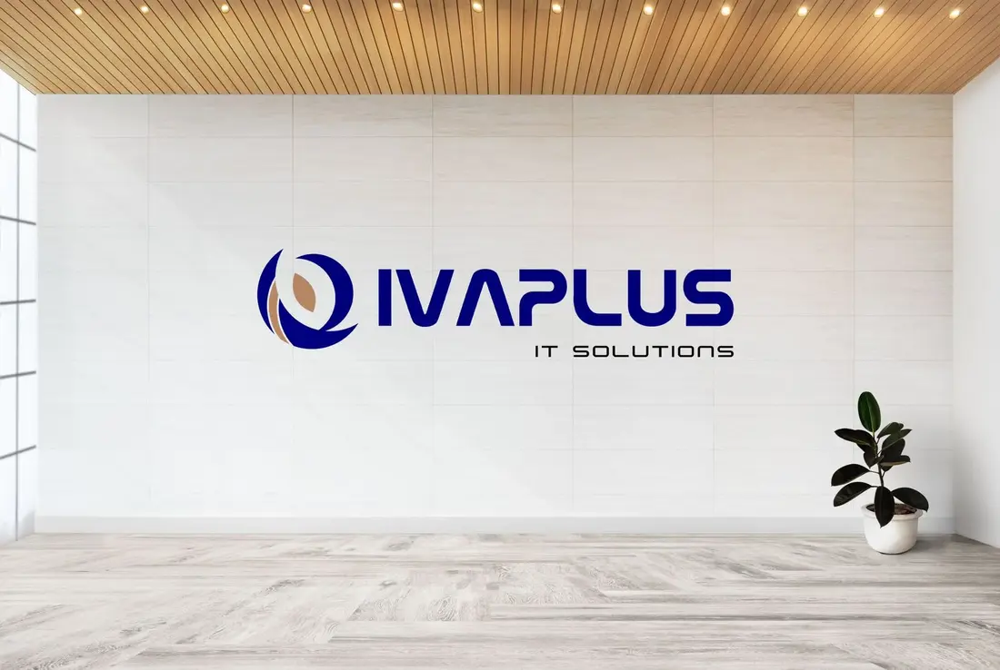
Specializing in building highly scalable, cloud-ready, comprehensive AI-driven solutions with primary focus on end-to-end automation of enterprise processes, examination administration, and automated learning evaluation suites.
Scale-ready cloud architecture powering large academic institutions and enterprise workflows.
Explore StartupDeepTech • Biomedical R&D
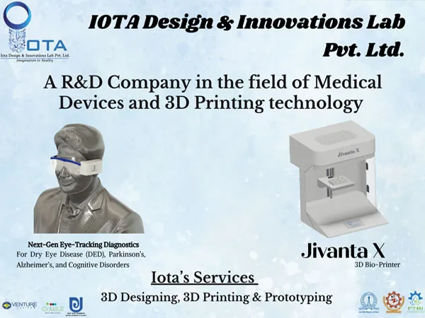
DeepTech R&D company specializing in advanced medical devices and 3D printing technologies. Developed an indigenous 3D bioprinter for cell printing in biotech research, along with diagnostics for early detection of Dry Eye and Parkinson’s disease.
Breakthrough biomedical instrumentation advancing cellular research across Indian laboratories.
Explore StartupCleanTech • Sustainability
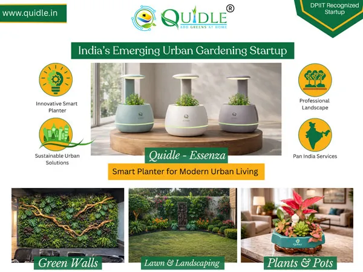
A DPIIT-recognized green venture focused on sustainable urban ecology solutions. Specializes in urban micro-gardening, architectural vertical green walls, and innovative smart planters for modern homes, universities, and commercial complexes.
Government-recognized green innovation turning urban infrastructure into thriving ecosystems.
Explore StartupAdTech • DOOH Marketplace
Founded by student entrepreneurs from NIT Rourkela, Hoardspace provides an intelligent digital marketplace for Out-of-Home (OOH) and Digital Out-of-Home (DOOH) advertising, enabling brands to discover, compare, and book billboards and digital displays in real time.
Student-led innovation pioneering programmatic outdoor advertising across Indian tier-1 and tier-2 hubs.
Explore StartupResearch & advanced grants
Faculty members have secured over ₹8.50 Crore in prestigious Advanced Research Grants from the Anusandhan National Research Foundation (ANRF), driving cutting-edge translational investigations across engineering and physical sciences.
1 of 8
Admission to undergraduate courses is made in the autumn semester at the first-year level through JEE (Main) or similar test approved by NIT Council, the counselling for which is done by Joint Seat Allocation Authority (JoSAA) and Central Seat Allocation Board (CSAB) or its equivalent approved by the NIT Council and/or Central Government. Besides, a specified number of foreign nationals selected under the policy of the Government of India may be admitted directly to the 1st-year of any of the programmes.
The courses leading to M. Tech. degree are open to candidates who have obtained the requisite qualification with 60% marks or 6.50 CGPA in aggregate in the qualifying examination. Admission for the GATE qualified candidates is made through Common Admission Process called Central Counselling for Master’s of Technology (CCMT). Relaxation up to 5% of marks or 0.5 CGPA is allowed by senate for sponsored candidates with proven research or profession experience.
For admission to M. Sc., candidates must have required B. Sc. degree with the subject applied for as one of the subjects (either Pass or Honours), Mathematics in +2 levels is compulsory for all courses except Life Science. The admission to the above programmes is made through Centralized Counselling for M.Sc.
The requisite academic qualification for MA in Development Studies is B. Tech. / B. A. / B. Sc. / B. Com. with 55% marks or 6.00 CGPA. Amongst B. A. / B. Sc. / B. Com. applicants with honours are given preference. Admission to the programme is made on the basis of career marks.
Minimum eligibility criterion for admission to MBA is any Graduate with 60% or 6.5 CGPA (on 10-point scale) and 55% or 6.0 CGPA in case of SC/ST candidates. Applicants who have qualified at national/international tests for admission to business schools with high scores get preference. Final selection is based on group discussion and personal interview conducted at the Institute, along with academic career and score of national or international tests.
A few departments offer M.Tech by research. This course don’t have a time bound and the course work will be decided by the Masters Scrutiny Committee (MSC). This course requires a submission of original research in form of a thesis..The minimum qualification required for admission to the program is one of the following.
The institute offers various research centric courses in various departments/ Centers like Post Doc, PhD, M.Tech. research under various schemes with fellowship like DST Inspire, Visvesvaraya PhD Scheme for Electronics and IT, and sponsored programs like QIP and self-financed.
The Institute provides facilities for research leading to the Degree of Doctor of Philosophy (PhD) in Engineering, Science, Management, Planning and Architecture, Humanities and Social Sciences in various disciplines. Candidates except the members of the Institute faculty, QIP scholars and scholars nominated by the Central Government have to be selected by Departmental Research Committee (DRC) on the basis of their academic background, performance in written test and/or interview.
NIT Rourkela has opened its doors for working professionals by offering programmes which are designed to enable them to pursue their doctorate degree while continuing in their Job/Profession in order to help them to accelerate their career. Candidates with minimum eligibility criteria as per NIT guidelines can apply and they will be selected based upon their academic background, performance in written test and/or interview.
NIT Rourkela has opened its doors for working professionals. These programmes are designed to enable them to pursue higher study while continuing in their Job/Profession in order to help them to accelerate their career.
Anger and intolerance are the enemies of correct understanding.
साक्ष्य
TESTIMONY
Answers from nitrkl.ac.in, with the pages they come from.
Hello! Ask me anything about NIT Rourkela: admissions, fees, placements, departments, faculty, events or notices.
An AI assistant. Check important details on the linked pages.
Social Initiatives
National Service Scheme (NSS)
National service
Guided by the motto “Not Me, But You,” NSS NIT Rourkela instills selfless service, civic leadership, and social responsibility. Student volunteers lead extensive cleanliness drives, mass tree plantation campaigns, voluntary blood donation camps, and rural welfare awareness programs fostering sustainable development.
Discover NSS Initiatives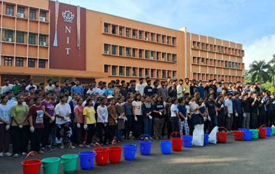
The Rotaract Club
Youth & health leadership
The Rotaract Club at NIT Rourkela fosters grassroots community and international service while nurturing leadership among youth. Its flagship initiative, SaPNA (Sanitary Pads & Awareness), spreads menstrual hygiene education and distributes sanitary kits across rural schools, alongside vital blood donation and community welfare programs.
Read ROTA Magazine (PDF, 10.9 MB)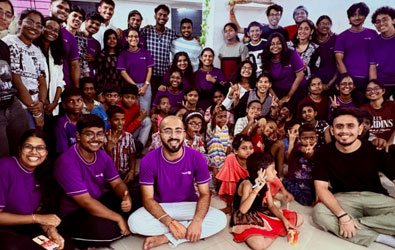
AASRA
Child development & education
AASRA is an impassioned student-led social service club focused on education and child development. Through regular evening tutoring sessions, digital literacy classes, and sports mentorship, AASRA bridges learning gaps among underprivileged children, fostering compassion, hope, and academic ambition in the community.
Learn About AASRA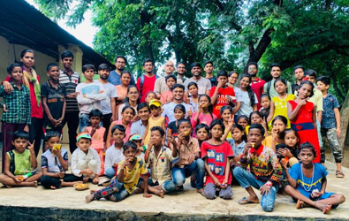
Unnat Bharat Abhiyan (UBA)
Rural innovation
Unnat Bharat Abhiyan transforms rural livelihoods by channeling the technological and scientific expertise of NIT Rourkela into village communities. Through sustainable energy solutions, clean water initiatives, agricultural modernization, and skill workshops, UBA empowers villages toward economic self-reliance.
Explore UBA Portal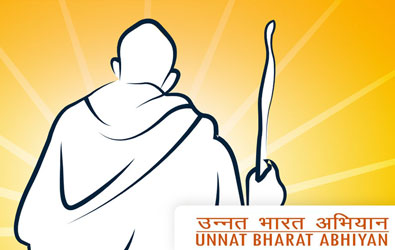